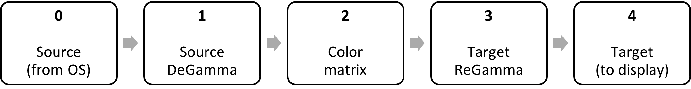
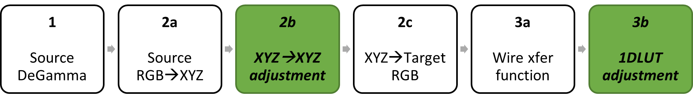
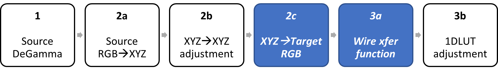

title: Windows hardware display color calibration pipeline description: This topic covers display color calibration using a new GPU display color transform pipeline that's supported by Windows 10, version 2004 (20H1) and later. keywords:
This topic covers display color calibration using a new GPU display color transform pipeline that's supported by Windows 10, version 2004 (20H1) and later. The pipeline provides significantly improved color accuracy over existing paths such as the GDI gamma ramp pipeline, and adds support for HDR displays.
This topic is for display and PC manufacturers and display calibration providers who want to better calibrate their customers' displays. Most Windows apps don't need to do anything to benefit from the pipeline; but if you develop color-managed apps, then you might want to be aware of how this technology works.
The new color pipeline is available for any display if the GPU meets the system requirements. If the display is HDR or uses auto color management, then there are additional considerations and requirements. which can be found in Use DirectX with Advanced Color on high/standard dynamic range displays.
Display color calibration is the process of ensuring that a display accurately matches its reported color space; for example, sRGB or DCI-P3 D65. Because of variations in the manufacturing process and other sources, an individual display panel might deviate from its specification. Once a display has been calibrated, your apps and content can confidently target the display's color space without worrying about that variability or inaccuracy.
At a high level, display color calibration involves these steps:
Windows 10, version 2004 provides enhanced functionality for steps 3 and 4, while display manufacturers and calibration providers are responsible for steps 1 and 2.
The new color transform pipeline requires a capable GPU and display driver. Supported GPU architectures include:
[!NOTE] Intel codename Comet Lake (5 digit model code) chipsets are not supported.
A Windows Display Driver Model (WDDM) 2.6 or later driver is needed (released with Windows 10, version 1903). Some GPU vendors need a newer driver, potentially as new as WDDM 3.0 (released with Windows 11, version 21H2).
See New display ICC profile management APIs for info about how an app can determine whether the new color transform pipeline is available on a system.
Windows 10, version 2004 exposes a GPU-accelerated display color transform pipeline consisting of a linear gamma color matrix and 1DLUT. Compared to the existing gamma ramp pipeline, it offers superior accuracy, precision, and support for wide color gamut displays. In addition, it adds support for new technologies such as HDR displays that use BT.2100 signaling.
The pipeline isn't directly programmable by apps, and instead is exposed only via MHC profiles; see below for more details. Other operating system (OS) features such as night light might also use this pipeline, and the OS manages how to share (compose) and/or rationalize pipeline access between multiple scenarios.
The color transform pipeline is based on the standard conceptual model for color space conversions:

The model can convert between any two RGB (or other 3-channel) color spaces, such as sRGB to P3 D65. It can also correct the most common types of panel color variation.
The Windows color transform pipeline takes the conceptual model, expands stages 2 (color matrix) and 3 (target regamma) into sub-stages, and exposes a subset of the stages (2b and 3b, in green) for apps to program, while leaving the remainder (white) controlled by the driver:

Those modifications allow the color pipeline to be agnostic to the color space of the source content, which may change on a frame-to-frame basis. Also, it improves compatibility with display color spaces such as BT.2100 ST.2084, which require opaque optimizations in order to preserve precision.
The input is the rendered framebuffer from the OS. It can be in one of several color spaces depending on the scenario, including sRGB, sYCC, HDR10, or scRGB, and can change on a frame-to-frame basis.
The display driver automatically converts the source content into linear gamma, and this stage is not programmable by apps.
In the standard color space conversion model, the matrix stage can be broken down into three matrices, which are composed (multiplied) together:
2a: Convert from the source content RGB color space (linear gamma) to an absolute color space; in the Windows pipeline, the absolute color space is CIEXYZ.
2b: Perform any adjustments in CIEXYZ space, such as calibration.
2c: Convert from CIEXYZ to the target RGB color space (linear gamma). The target RGB color space is defined as the encoding used when transmitting colors over the display wire, typically BT.709 or BT.2020 primaries. It is not the actual, measured primaries of the physical panel.
Matrix 2a is determined by the source content, and matrix 2c is determined by the display's signaling mode; only matrix 2b is accessible to apps. The driver multiplies the three together to generate the actual matrix to be executed in hardware:
FinalMatrix = SourceRGBtoXYZ * XYZtoXYZAdjust * XYZtoTargetRGB
[!NOTE] Because the display driver is responsible for the source RGB to XYZ, and target XYZ to RGB conversions, the matrix that you program (stage 2b) should not include either.
Example 1: If you're performing no adjustments to colors (pass-through), then your matrix should be identity, regardless of the type of display you're outputting to.
Example 2: If you're outputting to an SDR P3 D65 display, and are implementing an "sRGB proofing" profile that emulates sRGB on the panel, then your matrix should consist of a primaries rotation from sRGB into P3 D65.
This stage can be broken down into two RGB 1DLUTs, which are composed together:
3a: Encode the linear RGB data from stage 2c into the transfer function/gamma of the signal over the display wire.
3b: Perform any adjustments in the target gamma space, such as calibration.
1DLUT 3a is determined by the display wire format color space; most commonly it's sRGB for SDR displays, and ST.2084 for HDR displays. 3b is programmable by apps and occurs after the wire format transfer function is applied. The driver composes the two 1DLUTs to generate the actual 1DLUT to be executed in hardware:
Final1DLUT = Adjustment1DLUT(TargetReGamma(input))
[!NOTE] Because the driver is responsible for programming the display signal transfer function, the 1DLUT that you program (3b) should not include that encoding. For example, if you're performing no adjustments to colors (pass-through), then your 1DLUT should be identity, regardless of the display wire format color space.
This is the framebuffer to be scanned out over the wire by the GPU; in the display's native color space, and after any adjustments you have programmed. Additional operations such as YCbCr encoding might occur afterwards.
The linear gamma matrix stage (XYZ to XYZ adjustment) capability was introduced in Windows 10, version 1709. The capability enables you to perform adjustments to color primaries and white point, as well as arbitrary RGB color space conversions.
The 1DLUT adjustment stage is conceptually similar to the existing gamma ramp 1DLUT, but offers improved precision, with up to 4096 LUT entries at up to 16-bit fixed point precision.
[!NOTE] Not all hardware supports the full count of entries or precision exposed by the color pipeline.
A limitation of the existing gamma ramp pipeline is that it has undefined behavior when the display is using HDR (BT.2100 ST.2084) signaling. The new color transform pipeline explicitly supports both SDR (BT.1886 or sRGB) and HDR signaling, and scales to support future wire format color spaces. It accomplishes this via the "XYZ to Target RGB" and "Wire transfer function" (blue) stages in the block diagram:

Those two stages, which are controlled automatically by the driver, are responsible for encoding colors into the wire format color space: for example, sRGB or BT.2020 ST.2084.
Therefore, when you're programming the color transform pipeline, you get well-defined behavior based on the active wire format color space of the display.
Windows doesn't provide an API for directly controlling the new color transform pipeline at runtime. Instead, your app accesses the pipeline by writing a properly formatted International Color Consortium (ICC) color profile with extra data stored in a new "Microsoft Hardware Calibration" ("MHC2") private tag. It's a similar model to the existing gamma ramp pipeline, which uses "VCGT" private ICC tags. ICC profiles with valid MHC2 tag data are referred to as "MHC ICC profiles" or "MHC profiles".
[!NOTE] MHC2 refers to the second version of the private tag, which is available to all Windows 10, version 2004 devices; MHC1 shipped on an earlier release of Windows with specific OEM PCs.
In addition to programming the new color transform pipeline, MHC ICC profiles also contain ST.2086 HDR static metadata. Those are values that describe a display's dynamic range (luminance) and color gamut. They are widely implemented with HDR displays but are useful for any display. The values are:
The white point, max full frame luminance, and RGB color primaries are described using standard ICC tags. Peak and minimum luminance are described in the MHC2 tag. A profile must contain all of this information for the OS to accept the profile, and use it for Advanced Color scenarios.
Windows rationalizes ST.2086 metadata from multiple sources, including the MHC ICC profile, graphics driver, and EDID or DisplayID firmware. MHC ICC profiles are treated as the most trusted source, and will override other sources. Windows exposes this information via the HDR capability APIs as described in Use DirectX with Advanced Color on high/standard dynamic range displays—in that way, HDR apps are given the best available HDR display information.
A display might have an adjustable backlight, for example controlled by the user, or controlled automatically by an ambient light sensor. That introduces ambiguity with how the ST.2086 luminance values should be interpreted.
For displays where Windows has control over the backlight (typically for laptops and integrated panel devices), the luminance values must describe when this OS-controlled backlight is at its maximum or brightest setting.
For displays where Windows doesn't have control over the backlight (typically for external monitors), the luminance values are accurate only for the display state at the time of measurement.
An MHC ICC profile must use either ICC spec version 2 (ICC.1:2001-04) or version 4 (ICC.1:2010-12/ISO 15076-1:2010). An MHC ICC profile must be a display device profile.
An MHC ICC profile may include color transform pipeline data. The portions of the MHC2 structure that define the color transform may be empty, which explicitly indicates an identity transform.
An MHC ICC profile must include ST.2086 metadata. A profile containing only ST.2086 metadata and no transform data is used for HDR display calibration scenarios—in that case HDR calibration means providing more accurate min/max luminance and color gamut information for HDR apps and games.
MHC ICC profiles use existing public tags to define some of the ST.2086 metadata values. All of these tags are already required for display device profiles. Tag and data type definitions can be found in the ICC specifications.
| Tag name | Data type | ST.2086 value | Unit reported by Windows |
|---|---|---|---|
| redColorantTag | XYZNumber | Red primary | Chromaticity (xy) |
| greenColorantTag | XYZNumber | Green primary | Chromaticity (xy) |
| blueColorantTag | XYZNumber | Blue primary | Chromaticity (xy) |
| mediaWhitePointTag | XYZNumber | White point | Chromaticity (xy) |
| luminanceTag | XYZNumber | Max full frame luminance | Luminance (nits) |
An MHC ICC profile must contain one MHC2 tag structure. The matrix and 1DLUT color transform elements may be set to 0 (NULL), which explicitly indicate an identity transform for the respective stage. The ST.2086 metadata values must be filled in with valid data.
| Byte Position | Field Length (bytes) | Content | Data type |
|---|---|---|---|
| 0 to 3 | 4 | 'MHC2' (4D484332h) Type Signature | MHC2Type |
| 4 to 7 | 4 | Offset to beginning of tag data element | uInt32Number |
| 8 to 13 | 4 | Size of tag data element | uInt32Number |
| Byte Position | Field Length (bytes) | Content | Data type |
|---|---|---|---|
| 0 to 3 | 4 | 'MHC2' (4D484332h) Type Signature | |
| 4 to 7 | 4 | Reserved, set to 0 | |
| 8 to 11 | 4 | Number of 1DLUT entries (4096 or less) [1] OPTIONAL: 0 = Identity Transform | uInt32Number |
| 12 to 15 | 4 | ST.2086 min luminance in nits | S15Fixed16Number |
| 16 to 19 | 4 | ST.2086 peak luminance in nits | S15Fixed16Number |
| 20 to 23 | 4 | Offset in bytes to matrix [2] OPTIONAL: 0 = Identity Transform | uInt32Number |
| 24 to 27 | 4 | Offset in bytes to red 1DLUT [2] | uInt32Number |
| 28 to 31 | 4 | Offset in bytes to green 1DLUT [2] | uInt32Number |
| 32 to 35 | 4 | Offset in bytes to blue 1DLUT [2] | uInt32Number |
[1] The OS will interpolate data to the count of hardware-supported entries.
[2] Offsets within the MHC2Type structure are relative to the beginning of the structure, not the file.
| Byte Position | Field Length (bytes) | Content | Data type |
|---|---|---|---|
| 0 to 47 | 48 | 3x4 XYZ to XYZ adjustment matrix stored in row major order, column 4 is ignored [1] | s15Fixed16Number |
[1] The matrix structure is sized to fit 12 elements for a 3x4 matrix in row major order. However, Windows uses only data from the left three columns, effectively defining a 3x3 matrix. For example, storing these 12 values in linear order:
[a, b, c, 0, d, e, f, 0, g, h, i, 0]
produces the following matrix:
| First column | Second Column | Third Column |
|---|---|---|
| a | b | c |
| d | e | f |
| g | h | i |
[!NOTE] As described in Color space conversion matrix, don't include the source RGB to XYZ or XYZ to target RGB matrix transforms, since they are handled automatically by the driver. Target RGB is defined as the encoding used when transmitting colors over the display wire; typically BT.709 or BT.2020 primaries.
| Byte Position | Field Length (bytes) | Content | Data type |
|---|---|---|---|
| 0 to 3 | 4 | 'sf32' (73663332h) Type Signature | |
| 4 to 7 | 4 | Reserved, set to 0 | |
| 8 to end | Variable (0 to 16384) | Calibration LUT values normalized to [0.0, 1.0] | s15Fixed16Number |
[!NOTE] As described in Target ReGamma, this LUT operates in the wire format color space after the transfer function is encoded.
[!NOTE] If your measurements or calibration curve need fewer than 4096 LUT entries, then store only the count of entries you actually need, and specify the count in the MHC2Type structure. For example, the simplest identity LUT requires only two entries set to 0.0 and 1.0. The OS will interpolate to the count of hardware-supported entries.
[!NOTE] The guidance in this section applies to any display ICC profile, whether or not it contains MHC data.
Once you've generated an MHC ICC profile, you provision it on the Windows system for the targeted display. In earlier versions of Windows, you would use Windows Color System (WCS) profile management functions to do that. While you can continue to use these existing APIs, Windows 10, version 2004 adds a set of new, modernized APIs to WCS that are specialized for managing display ICC color profiles. These APIs are all prefixed with "ColorProfile":
[!NOTE] The above API provides functionality for which there's no existing WCS API equivalent.
A typical workflow using the ColorProfile APIs to provision an MHC ICC profile on the system is:
Windows has offered an inbox display color calibration loader since Windows 7. That calibration loader supports reading ICC profiles with gamma ramp pipeline data stored in either VCGT or MS00 private ICC profile tags. The gamma ramp loader must be explicitly turned on by calling WcsSetCalibrationManagementState.
Windows 10, version 2004 enhances the inbox calibration loader by adding support for MHC ICC profiles and the new color transform pipeline. Writing and provisioning an MHC ICC profile, and having the Windows loader apply its state, is the only method for apps to access the color transform pipeline: there are no direct access APIs. Unlike with the gamma ramp profiles, reading from MHC ICC profiles is always enabled, so once an MHC ICC profile is set as default on a capable system, its calibration state is automatically loaded.
New Advanced Color technologies such as HDR and auto color management add new capabilities to Windows including superior color accuracy and access to much larger display color gamuts; for more information, see Use DirectX with Advanced Color on high/standard dynamic range displays.
Advanced color and auto color management ensure consistent and colorimetrically accurate display color for all apps: both legacy and modern. However, some apps might perform their own explicit color management using International Color Consortium (ICC) color profiles.
When Advanced Color is active on either SDR or HDR displays, the behavior of display ICC profiles changes in non-backwards compatible ways. If your app works with display ICC profiles, then Windows offers compatibility behaviors to ensure that your app continues to get correct behavior.
For info about the changes to ICC profile behavior and how you can adapt your app to maximize compatibility with Advanced Color, refer to ICC profile behavior with Advanced Color.